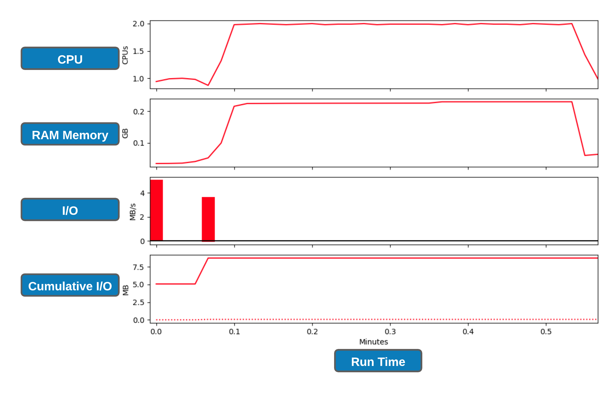

4. Working with job scheduler¶

Introduction to slurm scheduler and directives¶
An HPC system might have thousands of nodes and thousands of users. How do we decide who gets what and when? How do we ensure that a task is run with the resources it needs? This job is handled by a special piece of software called the scheduler. On an HPC system, the scheduler manages which jobs run where and when. In brief, scheduler is a
- Mechanism to control access by many users to shared computing resources
- Queuing / scheduling system for users’ jobs
- Manages the reservation of resources and job execution on these resources
- Allows users to “fire and forget” large, long calculations or many jobs (“production runs”)
Why do we need a scheduler ?
- To ensure the machine is utilised as fully as possible
- To ensure all users get a fair chance to use compute resources (demand usually exceeds supply)
- To track usage - for accounting and budget control
- To mediate access to other resources e.g. software licences
Commonly used schedulers
- Slurm
- PBS , Torque
- Grid Engine
- LSF – IBM Systems
All NeSI clusters use Slurm (Simple Linux Utility for Resource Management) scheduler (or job submission system) to manage resources and how they are made available to users. The main commands you will use with Slurm on NeSI Mahuika cluster are:
| Command | Function |
|---|---|
sbatch |
Submit non-interactive (batch) jobs to the scheduler |
squeue |
List jobs in the queue |
scancel |
Cancel a job |
sacct |
Display accounting data for all jobs and job steps in the Slurm job accounting log or Slurm database |
srun |
Slurm directive for parallel computing |
sinfo |
Query the current state of nodes |
salloc |
Submit interactive jobs to the scheduler |
A quick note on sinfo(Query the current state of nodes) which is not a command a researcher will use regularly but helps HPC admins and support staff with monitoring.
Exercise 4.1
Let's run the following commands and discuss the outputs
#summary of current states of compute nodes known to the scheduler
$ sinfo
#similar to above but expanded
$ sinfo --format="%16P %.8m %.5a %10T %.5D %80N"
#will print a long output as it is one row per compute node in the cluster
$ sinfo -N -l
#Explore the capacity of a compute node
$ sinfo -n wch001 -o "%n %c %m"
Life cycle of a slurm job¶

Anatomy of a slurm script and submitting first slurm job üßê¶
As with most other scheduler systems, job submission scripts in Slurm consist of a header section with the shell specification and options to the submission command (sbatch in this case) followed by the body of the script that actually runs the commands you want. In the header section, options to sbatch should be prepended with #SBATCH.
Commented lines are ignored by the bash interpreter, but they are not ignored by slurm. The
#SBATCHparameters are read by slurm when we submit the job. When the job starts, the bash interpreter will ignore all lines starting with#. This is very similar to the shebang mentioned earlier, when you run your script, the system looks at the#!, then uses the program at the subsequent path to interpret the script, in our case/bin/bash(the programbashfound in the /bin directory
| header | use | description |
|---|---|---|
| --job-name | #SBATCH --job-name=MyJob |
The name that will appear when using squeue or sacct. |
| --account | #SBATCH --account=nesi12345 |
The account your core hours will be 'charged' to. |
| --time | #SBATCH --time=DD-HH:MM:SS |
Job max walltime. |
| --mem | #SBATCH --mem=512MB |
Memory required per node. |
| --cpus-per-task | #SBATCH --cpus-per-task=10 |
Will request 10 logical CPUs per task. |
| --output | #SBATCH --output=%j_output.out |
Path and name of standard output file. %j will be replaced by the job ID. |
| --mail-user | #SBATCH --mail-user=me23@gmail.com |
address to send mail notifications. |
| --mail-type | #SBATCH --mail-type=ALL |
Will send a mail notification at BEGIN END FAIL. |
#SBATCH --mail-type=TIME_LIMIT_80 |
Will send message at 80% walltime. |
Exercise 4.2
- First create a new working directory and write the script
#Change working directory to your personal wd
$ cd /nesi/project/nesi02659/sismonr_workshop/workingdir/$USER
#confirm the path is correct (me123 is just a place holder for the place where you should see your username)
$ pwd
/nesi/project/nesi02659/sismonr_workshop/workingdir/me123/
#create a new directory for this section and change the directory to it
$ mkdir 4_wwscheduler && cd 4_wwscheduler
#use a text editor of choice to create a file named firstslurm.sl - we will use nano here
$ nano firstslurm.sl
Content of
firstslurm.slshould be as below. Please discuss as you make progress
- Save and Exit
- Submit the script with
sbatchcommand
Execute
squeue --meandsacct. Discuss the outputs .i.e.
STDOUT/STDERR from jobs¶
- STDOUT - your process writes conventional output to this file handle
- STDERR - your process writes diagnostic output to this file handle.
STDOUT and STDERR from jobs are, by default, written to a file called slurm-JOBID.out and slurm-JOBID.err in the working directory for the job (unless the job script changes this, this will be the directory where you submitted the job). So for a job with ID 12345 STDOUT and STDERR would be in slurm-12345.out and slurm-12345.err.
When things go wrong, first step of debugging (STORY TIME !) starts with a referral to these files.
Assessing resource utilisation (cpu, memory, time)¶
Understanding the resources you have available and how to use them most efficiently is a vital skill in high performance computing. The three resources that every single job submitted on the platform needs to request are:
- CPUs (i.e. logical CPU cores), and
- Memory (RAM), and
- Time.
What happens if I ask for the wrong resources?
| Resource | Asking for too much | Not asking for enough |
|---|---|---|
| Number of CPUs | Job may wait in the queue for longer | Job will run more slowly than expected, and so may run out time |
| Drop in fairshare score which determines job priority | ||
| Memory | (above) | Job will fail, probably with OUT OF MEMORY error, segmentation fault or bus error |
| Wall time | (above) | Job will run out of time and get killed |
Exercise 4.3
- Let's submit another slurm job and review its resource utilisation
#Change the working directory to Exercise_4.3
$ cd /nesi/project/nesi02659/sismonr_workshop/workingdir/$USER/Exercise_4.3
#Run ls command and you should see two files (one .R and one sl) and one directory named slurmout
$ ls -F
example1_arraysum.R example1_arraysum.sl slurmout/
#Review the slurm script with cat Or another text editor and submit with sbatch
$ sbatch example1_arraysum.sl
use
squeue --meandsacctagain to evaluate the job statusOnce the job ran into completion, use
nn_seff JOBIDcommand to print the resource utilisation statistics (Replace JOBID with the corresponding number)
slurm profiling¶
Although nn_seff command is a quick and easy way to determine the resource utilisation, it relies on peak values (data gets recorded every 30 seconds) which doesn't allows us to examine resource usage over the run-time of the job. There are number of in-built/external tools to achieve the latter which will require some effort to understand its deployment, tracing and interpretation. Therefore, we will use slurm native profiling to evaluate resource usage over run-time. This is a simple and elegant solution.
Exercise 4.4
#Change the working directory to Exercise_4.4
$ cd /nesi/project/nesi02659/sismonr_workshop/workingdir/$USER/Exercise_4.4
#Run ls command and you should see three files (one .R,sl and one .py - We will discuss the purpose of this .py file after submitting the job) and one directory named slurmout
$ ls -F
example1_arraysum.R example1_arraysum.sl profile_plot_Jul2020.py slurmout/
#Review the slurm script with cat Or another text editor and submit with sbatch
$ sbatch example1_arraysum.sl
- Do take a note of the JOBID as we are going to need it for next step. Otherwise, we use
squeue --meORsacctcommand as before to monitor the status -
Also, you can
watchthe status of this job via$ watch -n 1 -d "squeue -j JOBID".watchcommand execute a program periodically, showing output fullscreen. Exiting thewatchscreen by done by pressingCtrl+x
-
Let's create slurm profile graphs
#collate the data into an HDF5 file using the command. Replace **JOBID** with the corresponding number
$ sh5util -j JOBID
sh5util: Merging node-step files into ./job_JOBID.h5
#execute the script on .h5 file. We will need one of the Python 3 modules to do this. Ignore the deprecating warning.
$ module purge
$ module load Python/3.8.2-gimkl-2020a
#Replace **JOBID** with the corresponding number
$ python profile_plot_Jul2020.py job_JOBID.h5
#This should generate a .png file where the filename is in the format of job_23258404_profile.png

Exercise 4.5 üò¨
Let's submit your first sismonr slum job. * First step is to copy the already written R script to current working directory
#please do make sure the working directory is Exercise_4.5
$ pwd
/nesi/project/nesi02659/sismonr_workshop/workingdir/me123/Exercise_4.5
#copy the network file
$ cp /nesi/project/nesi02659/sismonr_workshop/dev/slurm_small_sim/simulate_colsystem_1second.R ./
- Now build a slurm script with the following parameters
- We would like the name of the slurm script file to be firstsim_slurm.sl
- job-name can be anything you want
--cpus-per-task 1and--mem 1G(this is based on test runs)--time 00:12:00( we expect the job to run within 10.2 minutes. Let's give it a bit more as runtime can affected by other factors)- Give any filename to
--outbut make sure the .out gets written intoslurmoutdirectory - Let's add profiling as well. Given the job runs for ~10 minutes, let's leave slurm alone and not ask it to gather data every 1 second. Instead, we will run it with the default 30 second time points .i.e. Don't need a
--acctg-freq 1directive - Now to the bash commands section of the slurm script. üò±üò±üò±üò±üò±